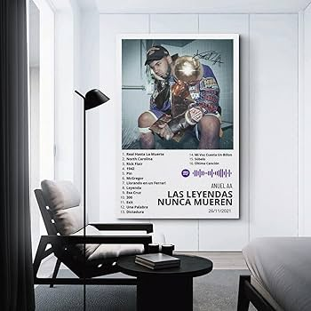
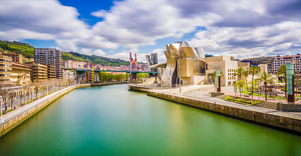

Portfolio
Image 1
What I like to do in my free time.
Image 2

Representation of my studies.
Image 3
The best city in the world, BILBAO.
Hello! My name is Asier Malo Garcia, and I am a student passionate about technology, programming, and the creative process behind building digital projects. I enjoy exploring different technologies and improving my skills through hands-on practice. I consider myself a curious and motivated person, always willing to learn new tools and face new challenges. Throughout my studies, I have developed an interest in web development, design, and the logic behind problem solving. This portfolio is a simple space where I share some of the work I have created, as well as information about my academic background and personal interests. My goal is to continue growing as a developer and gain new experiences that help me build a solid professional future.
What I like to do in my free time.
Representation of my studies.
The best city in the world, BILBAO.